정보처리산업기사 (2013-08-18 기출문제)
1과목: 데이터 베이스
1. 다음 트리에 대한 운행 결과의 순서가 “D → B → A→ G → E → H → C → F”일 경우, 적용된 운행 기법은?
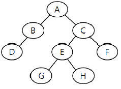
- Post-order
- In-order
- Pre-order
- Last-order
(정답률: 72%)

2. 순서가 A, B, C, D로 정해진 입력 자료를 스택에 입력하였다가 출력한 결과가 될 수 없는 것은?(단, 보기 항에서 좌측 값부터 먼저 출력된 순서이다.)
- D, C, B, A
- D, A, C, B
- A, C, B, D
- C, D, B, A
(정답률: 66%)
3. 막대한 양의 자료를 각종 매체에 저장하는 기법을 파일 조직, 파일 편성, 혹은 파일 구성 방법이라 한다. 일반적으로 많이 사용되는 파일 조직 방법 중에서 키 값에 따라 순차적으로 정렬된 데이터를 저장하는 데이터 지역(Data Area)과 이 지역에 대한 포인터를 가진 색인 지역(Index Area)으로 구성된 파일은?
- 링 파일(Ring File)
- 직접 파일(Direct File)
- 순차 파일(Sequential File)
- 색인 순차 파일(Indexed Sequential File)
(정답률: 84%)
4. 뷰(VIEW)에 대한 설명으로 옳지 않은 것은?
- 데이터의 접근을 제어하게 함으로써 보안을 제공한다.
- 사용자의 데이터 관리를 간단하게 해 준다.
- 뷰가 정의된 기본 테이블이 삭제되면, 뷰도 자동적으로 삭제된다.
- 하나 이상의 기본 테이블로부터 유도되어 만들어지는 물리적인 실제 테이블이다.
(정답률: 81%)
5. 데이터 모델의 종류 중 오너-멤버(owner-member) 관계를 갖는 것은?
- 관계 데이터 모델
- 계층 데이터 모델
- 뷰 데이터 모델
- 네트워크 데이터 모델
(정답률: 79%)
6. E-R 모델에 관한 설명으로 옳은 내용을 모두 나열한 것은?
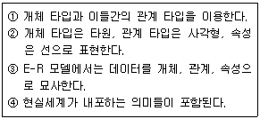
- ①, ②
- ①, ②, ④
- ①, ③, ④
- ①, ②, ③, ④
(정답률: 80%)
7. 선형 자료구조만으로 짝지어진 것은?
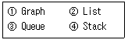
- ①, ②
- ①, ②, ③
- ②, ③, ④
- ①, ②, ③, ④
(정답률: 82%)
8. 다음 설명이 의미하는 것은?
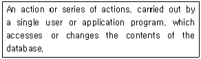
- DBA
- DBMS
- Transaction
- Schema
(정답률: 39%)
9. 데이터베이스의 설계순서를 바르게 나열한 것은?
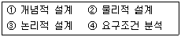
- ④ → ① → ③ → ②
- ① → ③ → ② → ④
- ③ → ② → ④ → ①
- ② → ④ → ① → ③
(정답률: 85%)
10. Which of the following is a language that enables users to access and manipulate data as organized by the appropriate data model?
- Data Definition Language
- Data Manipulation Language
- Data Control Language
- Host Language
(정답률: 70%)
11. 삽입(insertion) 정렬을 사용하여 다음의 자료를 오름차순으로 정렬하고자 한다. 1회전 후의 결과는?
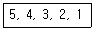
- 4, 5, 3, 2, 1
- 1, 2, 3, 4, 5
- 3, 4, 5, 2, 1
- 2, 3, 4, 5, 1
(정답률: 82%)
12. 관계 데이터 모델에서 릴레이션의 특성으로 옳지 않은 것은?
- 한 릴레이션에는 똑같은 튜플이 중복 포함될 수 있다.
- 한 릴레이션에 포함된 튜플 사이에는 순서가 없다.
- 한 릴레이션을 구성하는 애트리뷰트 사이에는 순서가 없다.
- 모든 속성 값은 원자값이다.
(정답률: 74%)
13. 데이터베이스의 구성 요소 중 개체(Entity)에 대한 설명으로 적합하지 않은 것은?
- 속성들이 가질 수 있는 모든 값들의 집합이다.
- 데이터베이스에 표현하려고 하는 현실 세계의 대상체이다,
- 유형, 무형의 정보로서 서로 연관된 몇 개의 속성으로 구성된다.
- 파일의 레코드에 대응하는 것으로 어떤 정보를 제공하는 역할을 수행한다.
(정답률: 45%)
14. 관계 데이터베이스의 테이블인 수강(학번, 과목명, 중간성적, 기말성적)에서 과목명이 “DB”인 모든 튜플들을 성적에 의해 정렬된 형태로 검색하고자 한다. 이때 정렬 기준은 기말성적의 오름차순으로 정렬하고 기말성적이 같은 경우는 중간성적의 내림차순으로 정렬하고자 한다. 다음 SQL 질의문에서 ORDER BY 절의 밑줄 친 부분의 내용으로 옳은 것은?
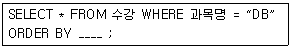
- 기말성적 DESC, 중간성적 ASC
- 기말성적 UP, 중간성적 DOWN
- 기말성적 ASC, 중간성적 DESC
- 기말성적 HIGH, 중간성적 LOW
(정답률: 72%)
15. 데이터베이스가 가지는 특성이 아닌 것은?
- 여러 사용자들에 의해 동시 공유된다.
- 저장된 내용이 계속적으로 변화된다.
- 레코드의 주소나 위치에 의해 참조된다.
- 실시간으로 처리하여 즉각적인 응답이 이루어진다.
(정답률: 66%)
16. 데이터베이스 관리자(Database Administrator)의 역할에 대한 설명으로 거리가 먼 것은?
- 데이터베이스의 물리적 저장 구조와 접근 권한을 결정한다.
- 최초의 데이터베이스 스키마를 생성하고, 이는 데이터 사전에 테이블 집합으로 영구 저장된다.
- 정보 보안 검사와 무결성 제약 조건을 지정한다.
- 주로 DML을 이용하여 사용자가 요구한 응용 프로그램을 작성한다.
(정답률: 58%)
17. SQL 문장의 기술이 적당치 않은 것은?
- select... from... where...
- insert... on values...
- update... set... where...
- delete... from... where...
(정답률: 76%)
18. 제 2정규형에서 제 3정규형이 되기 위한 조건은?
- 부분 함수 종속 제거
- 이행 함수 종속 제거
- 원자 값이 아닌 도메인을 분해
- 결정자가 후보 키가 아닌 함수 종속 제거
(정답률: 80%)
19. 큐의 응용 분야에 해당하는 내용을 모두 나열한 것은?
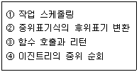
- ①
- ①, ②
- ①, ②, ③
- ①, ②, ③, ④
(정답률: 52%)
20. 시스템 카탈로그에 대한 설명으로 옳은 내용을 모두 나열한 것은?
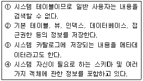
- ①, ②
- ①, ②, ③
- ②, ③, ④
- ①, ②, ③, ④
(정답률: 76%)
2과목: 전자 계산기 구조
21. 다음 중 조합 논리 회로는?
- 반가산기
- 레지스터
- 카운터
- 버스
(정답률: 72%)
22. [그림]에서와 같이 A, B 레지스터에 있는 2개의 자료에 대하여 ALU에 의해 OR 연산이 이루어졌을 때 그 결과가 출력되는 C 레지스터의 내용은?
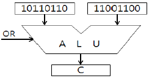
- 11101110
- 10110110
- 10000000
- 11111110
(정답률: 72%)
23. 35를 2진화 10진수(BCD)로 나타낸 것은?
- (00110011)BCD
- (00100000)BCD
- (00110101)BCD
- (00100101)BCD
(정답률: 53%)
24. 인출(fetch) 명령 사이클 상태를 나타낸 것으로 적합하지 않은 것은?
- ADD X : MBR(OP)→IR
- AND X : MBR(OP)→IR
- ADD X : MBR+AC→AC
- JMP X : MBR(PC)→IR
(정답률: 53%)
25. CAM(Content Addressable Memory)에 대한 설명 중 가장 옳지 않은 것은?
- 구성 요소로 key 레지스터, match 레지스터 등이 있다.
- 병렬 검색이 가능하다.
- 데이터를 직렬 탐색하기에 알맞도록 되어 있다.
- 주소를 사용하지 않고 기억된 정보의 일부분을 이용하여 자료를 신속히 찾을 수 있다.
(정답률: 49%)
26. 묵시적 주소지정 방식에서 산술 연산을 실행하는데 사용되는 레지스터는?
- 누산기
- 데이터 레지스터
- 주소 레지스터
- 인덱스 레지스터
(정답률: 62%)
27. 명령을 수행하기 위하여 CPU 내의 레지스터와 플래그의 상태 변환을 일으키는 작업을 무엇이라 하는가?
- Fetch
- Count Operation
- Micro Operation
- Program Operation
(정답률: 56%)
28. 다음 중 보조기억장치의 데이터를 입출력할 경우 가장 효율성이 뛰어난 방법은?
- Direct Memory Access
- Interrupt I/0
- Programmed I/0
- Strobe
(정답률: 63%)
29. 누산기(Accumulator)에 대한 설명으로 옳은 것은?
- 데이터를 누적하는 곳으로 기억 장치에 있다.
- 연산을 위한 중간 결과를 저장하는 곳이다.
- 필요한 연산을 실행하는 곳이다.
- 다음에 실행될 명령이 있는 주소를 가리킨다.
(정답률: 58%)
30. -14를 부호화된 2의 보수 표현법으로 표현한 것은?(단, 8bit로 표시)
- 10001110
- 11100011
- 11110010
- 11111001
(정답률: 52%)
31. 컴퓨터의 메이저 사이클에서 인터럽트 사이클 후 처리되는 사이클은?
- 실행(execute)
- 간접(indirect)
- 인출(fetch)
- 직접(direct)
(정답률: 61%)
32. 하드 디스크 드라이브(HDD)와 비슷하게 동작하면서 기계적 장치인 HDD와는 달리 반도체를 이용하여 정보를 저장하는 것은?
- CCD
- SSD
- 캐시메모리
- DVD
(정답률: 74%)
33. 캐시의 적중률(hit ratio)을 구하는 식은?
- 적중시간/총액세스시간
- 총액세스횟수/적중횟수
- 적중횟수/총액세스횟수
- 총액세스시간/적중시간
(정답률: 57%)
34. 일반적인 micro processor에서 ALU가 위치한 곳, ALU의 의미가 옳게 나열된 것은?
- CPU, 산술논리연산장치
- ROM, 산술논리연산장치
- CPU, address Locating unit
- ROM, address locating unit
(정답률: 68%)
35. 다음 중 패리티 비트를 검사하려면 어떤 게이트를 사용하는 것이 가장 좋은가?
- AND
- NAND
- NOR
- EX-OR
(정답률: 54%)
36. 다음 논리 회로의 출력 F는?
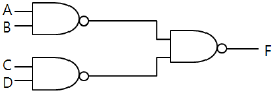
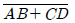
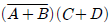
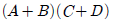
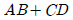
(정답률: 56%)
37. 주소의 변경이나 프로그램 루프의 실행 횟수를 계산하는데 유용한 명령으로 지정된 주소에 저장된 워드의 내용을 1 증가시킨 다음 그 결과가 0 이면 다음 명령을 skip하고, 0 이 아니면 그대로 다음 명령을 실행하는 것은?
- BUN 명령
- BSA 명령
- JMP 명령
- ISZ 명령
(정답률: 45%)
38. 입출력 채널과 프로세서가 동시에 주기억장치를 접근 하려고 하면 문제가 발생한다. 이 때 채널의 우선순위를 높여주어 입출력 장치의 효율을 향상시키기 위해 사용하는 것은?
- DMA
- 인터럽트
- 사이클 스틸링
- 핸드세이킹
(정답률: 40%)
39. 다음 중 마이크로 명령 형식을 표현한 것으로 옳지 않은 것은?
- 수직 마이크로 명령
- 나노 명령
- 수평 마이크로 명령
- 컨트롤 마이크로 명령
(정답률: 40%)
40. 다음은 입출력 채널(Channel)의 종류를 분류 기준에 따라 설명한 것이다. 옳은 것은?
- 연결 형태에 따라 고정채널과 가변채널로 구분되며 고정채널이 가변채널에 비해 채널 효율이 낮다.
- 정보 취급방법에 따라 멀티플렉서 모드와 버스트 모드로 구분되며 멀티플렉서 모드는 대량의 데이터를 고속으로 전송하기에 적합한 방식이다.
- 입출력 장치의 설질에 따라 실렉터 채널과 멀티플렉서 채널로 구분되며 저속의 입출력장치의 경우 실렉터 채널에 연결하는 것이 효율적이다.
- 채널 제어를 위한 임의의 시점에서 볼 때 어느 하나의 입출력 장치를 독점 운영하는 형태의 채널을 멀티플렉서 채널이라 한다.
(정답률: 42%)
3과목: 시스템분석설계
41. 해싱에서 동일한 버켓 주소를 갖는 레코드들의 집합을 의미하는 것은?
- Slot
- Division
- Collision
- Synonym
(정답률: 65%)
42. 자료 흐름도에 대한 설명으로 옳지 않은 것은?
- 처리 공정은 원, 자료저장소는 이중직선, 종착지는 사각형, 자료 흐름은 점선으로 표시한다.
- 시스템의 활동적인 구성 요소 및 그들 간의 연관 관계를 모형화 한다.
- 자료 흐름도는 논리적으로 일관성이 있어야 한다.
- 기능별로 분할하고 다차원적이다.
(정답률: 62%)
43. 입력 정보의 설계 순서로 옳은 것은?
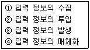
- ① → ② → ③ → ④
- ① → ④ → ② → ③
- ③ → ① → ④ → ②
- ④ → ② → ③ → ①
(정답률: 68%)
44. 객체의 특성으로 옳지 않은 것은?
- 상태와 행위를 가지고 있다.
- 식별성을 가진다.
- 객체들 간의 관계를 가진다.
- 일정한 기억 장소를 갖지 않는다.
(정답률: 72%)
45. 소프트웨어 비용 산정 방법 중 전문가가 독자적으로 감정할 때 발생할 수 있는 편차를 줄이기 위해 단계별로 전문가들의 견해를 조정자가 조정하여 최종 견적을 결정하는 것은?
- 전문가 감정에 의한 방법
- 델파이 방법
- LOC 방법
- COCOMO 방법
(정답률: 47%)
46. 대화형 입출력 방식 중 화면에 여러 개의 항목을 진열하고 그 중의 하나를 선택 도구로 지정하여 직접 실행하는 방식으로 직접 조작 방식이라고도 하는 것은?
- 프롬프트 방식
- 메뉴 방식
- 항목 채우기 방식
- 아이콘 방식
(정답률: 60%)
47. 동일한 형식의 2개 이상의 파일을 하나의 파일로 만드는 작업은?
- match
- merge
- update
- conversion
(정답률: 70%)
48. 컴퓨터에 의한 계산 처리에 앞서 오류 데이터를 찾기 위하여 입력되는 데이터 항목의 논리적 모순 여부를 체크하는 방법은?
- Numeric Check
- Limit Check
- Logical Check
- Matching Check
(정답률: 60%)
49. 시스템의 특성 중 (ㄱ), (ㄴ)의 설명에 해당하는 것으로 옳게 나열된 것은?
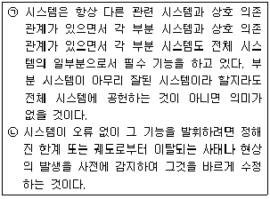
- (ㄱ) 종합성, (ㄴ) 제어성
- (ㄱ) 제어성, (ㄴ) 목적성
- (ㄱ) 목적성, (ㄴ) 제어성
- (ㄱ) 종합성, (ㄴ) 자동성
(정답률: 70%)
50. 람바우의 객체지향분석 모델링에서 데이터 흐름 다이어그램을 이용하여 다수의 프로세스들 간의 데이터 흐름을 중심으로 처리과정을 표현한 모델링은?
- 동적 모델링
- 기능 모델링
- 클래스 모델링
- 객체 모델링
(정답률: 29%)
51. 시스템의 기본 요소 중 출력 결과가 만족스럽지 않거나 보다 좋은 출력을 위해 다시 입력하는 과정은?
- 출력
- 처리
- 제어
- 피드백
(정답률: 79%)
52. 프로세스 설계시 고려 사항에 해당하는 내용을 모두 나열한 것은?
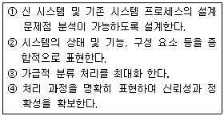
- ①, ②
- ①, ②, ③
- ①, ②, ④
- ②, ③, ④
(정답률: 78%)
53. 다음의 코드 설계 단계 중 가장 먼저 행하는 것은?
- 코드 대상 항목 선정
- 사용 범위와 기간의 결정
- 코드 부여 방식 결정
- 코드 목적의 명확화
(정답률: 66%)
54. 파일 편성법 중 랜덤 편성법에 대한 설명으로 옳은 내용 모두를 나열한 것은?
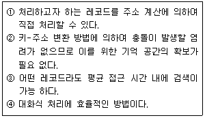
- ①, ③
- ①, ②, ④
- ①, ③, ④
- ②, ③, ④
(정답률: 58%)
55. 색인 순차 파일(Indexed Sequential File)에서 색인 영역(index area)의 종류로 옳은 것은?
- Master Index area, Cylinder Index area, Data Index area
- Cylinder Index area, Track Index area, Data Index area
- Master Index area, Cylinder Index area, Track Index area
- Track Index area, Master Index area, Data Index area
(정답률: 66%)
56. 모듈의 결합도는 설계에 대한 품질 평가 방법의 하나로서 두 모듈 간의 상호 의존도를 측정하는 것이다. 다음 중 설계 품질이 가장 좋은 결합도는?
- Common Coupling
- Data Coupling
- Control Coupling
- Content Coupling
(정답률: 38%)
57. 흐름도(Flowchart)의 종류 중 다음 설명에 해당하는 것은?
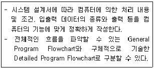
- 시스템 흐름도
- 프로그램 흐름도
- 프로세스 흐름도
- 블록 차트
(정답률: 49%)
58. 중량, 용량, 거리, 크기, 면적 등의 물리적 수치를 직접 코드에 적용시키는 코드 방식은?
- Significant Digit Code
- Sequence Code
- Block Code
- Decimal Code
(정답률: 61%)
59. 입력 정보의 설계 단계 중 입력 정보 투입 단계에서의 결정사항에 해당하는 내용 모두를 나열한 것은?
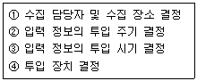
- ①, ④
- ①, ②, ④
- ②, ③, ④
- ①, ②, ③, ④
(정답률: 67%)
60. 시스템의 문서화 목적으로 거리가 먼 것은?
- 시스템 개발 후 유지 보수가 용이하다.
- 시스템 개발팀에서 운용팀으로 인계, 인수를 쉽게 할 수 있다.
- 시스템 개발 중 추가 변경에 따른 혼란을 방지할 수 있다.
- 문제 발생시 책임 한계를 명확히 할 수 있다.
(정답률: 74%)
4과목: 운영체제
61. UNIX의 커널(Kernel)에 대한 옳은 내용 모두를 나열한 것은?
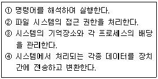
- ①
- ②, ③
- ②, ③, ④
- ①, ②, ③, ④
(정답률: 58%)
62. 보안 메커니즘의 설계 원칙에는 개방된 설계, 최소 특권, 특권의 분할, 메커니즘의 경제성 등이 있다. 이 중 개방된 설계의 의미를 가장 적절하게 설명한 것은?
- 알고리즘은 알려졌으나, 그 키는 비밀인 암호 시스템의 사용을 의미한다.
- 트로이 목마로부터의 피해를 제한하기 위해 모든 주체는 업무 완수에 필요한 최소한의 특권만을 사용해야 한다.
- 가능하다면 객체에 대한 접근은 하나 이상의 조건을 만족하게 해야 한다.
- 가능한 한 기능 검증과 쉽게 정확한 구현을 할 수 있도록 간단히 설계한다.
(정답률: 57%)
63. 페이지 교체 알고리즘 중 각 페이지마다 계수기나 스택을 두어 현 시점에서 가장 오랫동안 사용하지 않은 페이지를 교체하는 것은?
- LFU
- SCR
- FIFO0
- LRU
(정답률: 67%)
64. 페이지 크기에 대한 설명으로 옳지 않은 것은?
- 페이지 크기가 작을 경우 한 개의 페이지를 주기억장치로 이동하는 시간이 줄어든다.
- 페이지 크기가 클 경우 맵 테이블의 크기가 작아 진다.
- 페이지 크기가 클 경우 전체적인 입출력의 효율성이 감소된다.
- 페이지 크기가 작을 경우 전체 맵핑 속도가 늦어 진다.
(정답률: 38%)
65. SJF(Shortest Job First) 스케줄링에서 작업 도착 시간과 CPU 사용시간은 다음 표와 같다. 모든 작업들의 평균 대기 시간은?
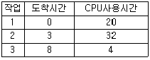
- 6
- 11
- 12
- 15
(정답률: 58%)
66. 파일시스템의 기능으로 거리가 먼 것은?
- 사용자가 물리적 이름을 사용하는 대신에 기호형 이름을 사용하여 자신의 파일을 참조할 수 있도록 장치 독립성을 제공한다.
- 이용자의 데이터와 이들 데이터에 대해 수행될 수 있는 작업에 대한 물리적 구조를 제공한다.
- 불의의 사고로 인한 정보의 손실이나 고의적인 파괴를 방지하기 위해 백업과 복구 능력을 갖추어야 한다.
- 정보가 안전하게 보호되고 비밀이 보장되어야 하는 환경에서는 정보를 암호화하고 해독할 수 있는 능력을 갖추어야 한다.
(정답률: 40%)
67. 자원 보호 기법 중 객체와 그 객체에 허용된 조작 리스트이며 영역과 결합되어 있으나 사용자에 의해 간접적으로 액세스 되는 기법은?
- 접근 제어 행렬(access control matrix)
- 권한 리스트(capability list)
- 접근 제어 리스트(access control list)
- 자물쇠와 열쇠(lock/key) 메커니즘
(정답률: 37%)
68. PCB(Process Control Block)가 포함하는 정보에 해당하는 내용 모두를 나열한 것은?
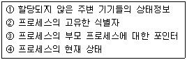
- ①, ②
- ①, ③
- ②, ③, ④
- ①, ②, ③, ④
(정답률: 68%)
69. 운영체제의 성능 평가 기준 중 시스템이 주어진 문제를 정확하게 해결하는 정도를 의미하는 것은?
- Throughput
- Reliability
- Turn Around Time
- Availability
(정답률: 44%)
70. 다음과 같이 트랙이 요청되어 큐에 순서적으로 도착 하였다. 모든 트랙을 서비스하기 위하여 디스크 스케줄링 기법 중 FCFS 스케줄링 기법이 사용되었을 경우, 트랙 10은 요청된 트랙 중 몇 번째에 서비스를 받게 되는가?(단, 현재 헤드의 위치는 트랙 22이다.)
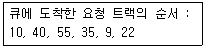
- 첫 번째
- 두 번째
- 세 번째
- 네 번째
(정답률: 63%)
71. 다음은 무엇에 관한 정의인가?
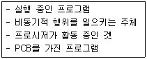
- PROCESS
- WORKING SET
- MONITOR
- SEMAPHORE
(정답률: 77%)
72. 13K의 작업을 다음 그림의 30K 공백의 작업공간에 할당했을 경우 사용된 기억장치 배치전략 기법은?(단, 탐색은 위에서 아래로 한다.)
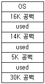
- Last fit
- Best fit
- First fit
- Worst fit
(정답률: 69%)
73. UNIX 파일 시스템 구조에서 데이터 블록의 주소 정보를 보관하고 있는 것은?
- 부트 블록
- 슈퍼 블록
- I-node 블록
- 데이터 블록
(정답률: 59%)
74. 3 페이지가 들어갈 수 있는 기억 장치에서 다음과 같은 순서로 페이지가 참조될 때 FIFO 기법을 사용하면 페이지 부재(page fault)는 몇 번 발생하는가?(단, 현재 기억장치는 모두 비어 있다고 가정한다.)
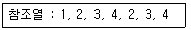
- 3
- 4
- 5
- 6
(정답률: 55%)
75. 병렬처리의 주종(Master/Slave) 시스템에 대한 설명으로 옳지 않은 것은?
- 주프로세서는 입출력과 연산을 수행한다.
- 종프로세서는 입출력 발생시 주프로세서에게 서비스를 요청한다.
- 종프로세서가 운영체제를 수행한다.
- 비대칭 구조를 갖는다.
(정답률: 65%)
76. Round-Robin 스케줄링(Scheduling) 방식에 대한 옳은 설명 모두를 나열한 것은?
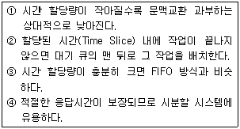
- ①
- ①, ③, ④
- ②, ③, ④
- ①, ②, ③, ④
(정답률: 64%)
77. 분산처리 운영체제 시스템의 특징으로 거리가 먼 것은?
- 시스템 설계의 단순화
- 연산 속도 향상
- 자원 공유
- 신뢰성 증진
(정답률: 67%)
78. 운영체제에 대한 옳은 내용 모두를 나열한 것은?
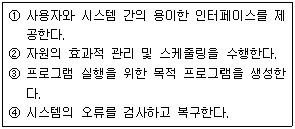
- ①
- ①, ④
- ①, ②, ④
- ①, ②, ③, ④
(정답률: 60%)
79. 교착상태의 해결 방안 중 은행원 알고리즘과 관계되는 것은?
- Avoidance
- Prevention
- Detection
- Recovery
(정답률: 65%)
80. HRN 스케줄링 기법을 적용할 경우 우선 순위가 가장낮은 것은?
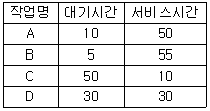
- A
- B
- C
- D
(정답률: 63%)
5과목: 정보통신개론
81. 다음 중 베이스밴드(base band) 방식의 변조에 해당되는 것은?
- 주파수편이 변조(FSK)
- 위상편이 변조(PSK)
- 펄스코드 변조(PCM)
- 진폭편이 변조(ASK)
(정답률: 43%)
82. 협대역 ISDN의 가입자 전송채널에 대한 설명으로 틀린 것은?
- B채널은 정보 채널로 64Kbps의 전송속도를 제공한다.
- D채널은 신호 채널로 16Kbps와 64Kbps의 전송 속도를 제공한다.
- H채널은 고속의 사용자 정보전송을 위한 채널이다.
- BRI 채널은 기본 접속서비스채널로 B+2D로 구성 된다.
(정답률: 49%)
83. OSI 참조모델에 관한 설명으로 틀린 것은?
- 시스템간의 상호회선교환만을 위한 개념을 규정한다.
- OSI 규격을 개발하는데 있어서 그 범위를 정한다.
- 계층화함으로써 프로토콜 개발의 용이성과 독립성을 제공한다.
- 컴퓨터 통신을 위한 기본 골격을 제시하고 있다.
(정답률: 64%)
84. 통신망 구성 형태 중 하나의 노드에 여러 개의 노드가 연결되어 있는 형태로, 각 노드가 계층적으로 구성되어있는 망의 형태는?
- 트리(Tree)형
- 링(Ring)형
- 스타(Star)형
- 버스(Bus)형
(정답률: 62%)
85. 다음이 설명하고 있는 시스템은?
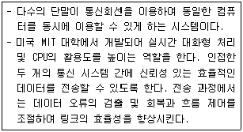
- 멀티태스킹 시스템
- 시분할 시스템
- 시스템 제너레이션 시스템
- 데이터베이스 관리 시스템
(정답률: 49%)
86. 다음 중 데이터링크 계층에서 손상된 프레임의 재전송을 요구하는 자동반복 요청의 기능은?
- 흐름제어
- 전송에러제어
- 링크제어
- 회선제어
(정답률: 61%)
87. 데이터 전송에러 검출방식 중에서 집단 에러에 대해 신뢰성 있는 에러검출을 위해 다항식 코드를 사용하여 에러 검사를 하는 방식은?
- Parity Check
- Block Sum Check
- CRC
- Run Length
(정답률: 44%)
88. 대도시 정보통신망으로 넓은 지역에 분산되어 있는 건물 및 기관들을 연결하여 데이터 전송서비스를 목적으로 하는 정보통신망은?
- MAN
- LAN
- WWW
- VAN
(정답률: 51%)
89. 데이터와 확인신호(ACK) 등을 보내고 문자동기를 유지하는 기능은 전송제어 절차 중 어느 단계에 속하는가?
- 회선의 접속
- 데이터 링크의 설정
- 정보의 전송
- 데이터 링크의 종결
(정답률: 45%)
90. 패킷교환방식의 설명으로 적합하지 않는 것은?
- 패킷은 정해진 크기의 비트 수로 나눈 후 정해진 형식에 맞추어 만들어진 데이터의 묶음이다.
- 선택-저장-전달 방식을 사용하기 때문에 링크를 효율적으로 이용할 수 있다.
- 컴퓨터와 터미널 간 통신 프로토콜이 다른 경우에도 통신이 가능한 교환방식이다.
- 작성된 패킷에 의해 목적지의 주소나 송신측의 주소 등을 부가하여 전송한다.
(정답률: 31%)
91. "인접한 두 개의 통신 시스템 간에 신뢰성 있는 효율적인 데이터를 전송할 수 있도록 한다. 전송 과정에서는 데이터 오류의 검출 및 회복과 흐름 제어를 조절하여 링크의 효율성을 향상시킨다." OSI-7계층에서 설명에 해당되는 계층은?
- 물리 계층
- 데이터링크 계층
- 응용 계층
- 표현 계층
(정답률: 67%)
92. 이동통신망에서 통화중인 이동국이 현재의 셀에서 벗어나 다른 셀로 진입하는 경우, 셀이 바뀌어도 중단 없이 통화를 계속할 수 있게 해주는 것은?
- 핸드오프(hand off)
- 다이버시티(diversity)
- 셀 분할(cell splitting)
- 로밍(roaming)
(정답률: 59%)
93. 다음 중 HDLC 프레임 구조에 포함되지 않는 것은?
- 플래그(flag) 필드
- 제어(control) 필드
- 주소(address) 필드
- 시작(start) 필드
(정답률: 57%)
94. 다음 중 비트방식의 데이터 링크 프로토콜이 아닌 것은?
- BSC
- SDLC
- HDLC
- ADCCP
(정답률: 48%)
95. 통신회선을 다중화 함으로써 얻어지는 가장 큰 장점은?
- 데이터 전송시 에러정정이 쉽다.
- 송수신 시스템이 간단하다.
- 하나의 전송링크를 통하여 여러 사용자가 동시에 사용가능하다.
- 전송속도가 현저히 빨라진다.
(정답률: 62%)
96. MHS(Message Handling System)에 대한 설명으로 바르지 않는 것은?
- MS는 메시지를 축적하는 사서함 기능을 갖는다.
- 사용자간의 메시지를 송수신 하는 기능을 갖는다.
- MHS는 UA, MTA, MS 등으로 구성된다.
- 신호변환 및 정보처리가 가능하다.
(정답률: 55%)
97. 단말장치의 기능으로 거리가 가장 먼 것은?
- 입출력 기능
- 전송제어 기능
- 기억 기능
- 감시 기능
(정답률: 61%)
98. 전이중 통신에 대한 설명으로 옳은 것은?
- 송신을 하면서 동시에 수신도 할 수 있는 방식이다.
- 양방향 어느 쪽으로도 데이터를 전송할 수 있으나 동시에 전송할 수는 없다.
- 송신측과 수신측을 서로 필요에 따라 교대하는 방식이다.
- 전기적으로 신호를 보내기 위해서는 송신측과 수신측을 연결하는 폐쇄회로를 구성해야하므로 2개의 선로가 필요하다.
(정답률: 64%)
99. 통신제어장치의 기능 중에서 송신과 수신을 동일한 타이밍으로 동작시키기 위한 기능은?
- 오류제어
- 흐름제어
- 동기제어
- 응답제어
(정답률: 51%)
100. 데이터 통신에서 오류가 검출되면 자동으로 송신 스테이션에게 재전송을 요청하는 ARQ 방식의 종류가 아닌 것은?
- Stop-and Wait ARQ
- Control-Data ARQ
- GO-back-N ARQ
- Selective-Repeat ARQ
(정답률: 53%)